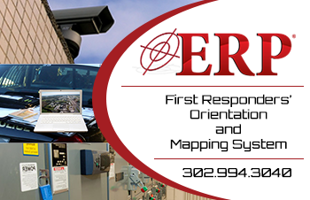
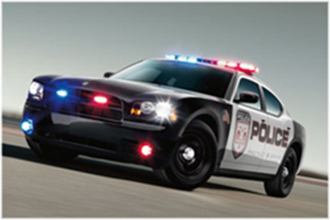

-
What is ERP?

Emergency Response Protocol (ERP) is in the business of saving lives and property with technology using proactive crisis management tools.
Launched on March 7, 2011, this website "is not only designed to provide prospective clients a comprehensive overview on the features and benefits of the ERP Product, but to be a free on-line resource for everyone where key information on emergency response best practices can be shared," as mentioned by Dave Tiberi, President of Emergency Response Protocol, LLC.
-
Reaction Time

In an emergency every second counts and ERP can save minutes and lives by speeding reaction time. The straight forward interface and web-based accessibility lets first responders become familiar with your site before they arrive.
ERP's trademark Emergency Management software tool provides a reputation for depth, experience and subject matter expertise. Successful deployment in several large major public facilities shows clients that ERP is not just another residential/small business installer but a professional full-service provider.
-
Return on Investment
ERP is a sound investment in saving lives and reducing property damage in an emergency. Some insurers offer discounts for ERP users. Totally scalable, designed for any budget and 1 year of free updates makes ERP a solid investment.
We believe each client and each situation is unique and one size NEVER fits everyone! We also believe when it comes to Total Security Solutions our clients deserve nothing less!
-
Peace of Mind
ERP offers you and your staff peace of mind that your facility is ready and able to respond to nearly any emergency. ERP is a password protected vault of all the critical information about your facility, updated daily and available 24/7.
We frequently draw on the hundreds of years of real-world experience available from among these veteran professionals when designing our total security solutions for a specific client.
-
Endorsements
William Esposito - Former Deputy Director of FBI and Former Head of National Facilities for MBNA
"In this day and age ERP is not a luxury it is a necessity for anyone with a public/private facility. This system will work because it is designed by first responders - not techies. It improves communication of various stake holders, such as fire, police, safety, health and management." -Click name to go to page
W. Scott McLaren - Director of Public Safety New Castle County, DE
"These days first responders need that "edge" in order to respond smarter to threats to our homeland. ERP uses cutting edge technology to reduce loss of life and property, as well as provides real-time intelligence to those who are charged with addressing the threat head on."-Click name to go to page